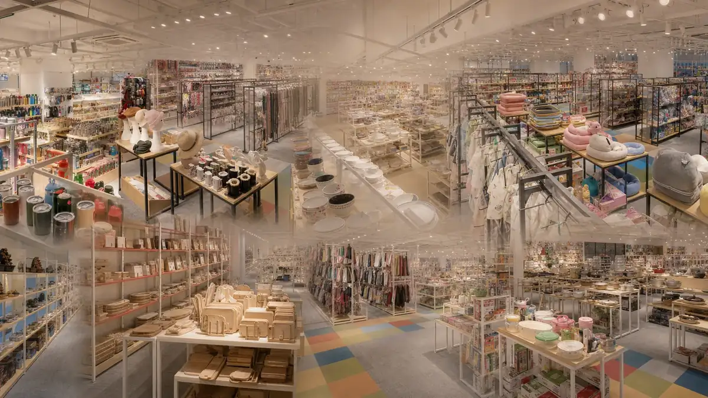

The short answer
A furniture sourcing agent in China helps an international B2B buyer turn product references into a controlled purchasing project. The work may cover supplier research, comparable quotations, samples, customization, order follow-up, quality checks, warehouse receiving, consolidation and export preparation.
The agent does not replace the buyer's product decisions or destination-market responsibilities. Before an order begins, both sides should agree on the exact specification, service scope, evidence, costs and decision points.
When does a furniture buying agent add value?
Direct contact with one known furniture factory may be sufficient for a simple repeat order. An agent becomes more useful when a buyer needs to compare several suppliers, develop a private-label product, combine different furniture categories or coordinate China-side work that cannot be managed remotely.
- Retail assortments: home, office, outdoor, storage, commercial or children's furniture sourced across several suppliers.
- Private-label programmes: controlled dimensions, materials, finishes, branding, manuals and packaging.
- Project orders: furniture matched to drawings, layouts, durability expectations, installation and delivery sequence.
- Mixed shipments: several purchase orders received, reconciled and consolidated before export.
- Remote buying: samples, production evidence and shipment decisions coordinated when the buyer cannot visit every supplier.
Step 1: Build a furniture sourcing brief
A supplier cannot quote like-for-like furniture from one reference photo. Use a product sheet or drawing that records the details controlling cost, quality, packing volume and destination suitability.
Step 2: Compare furniture suppliers on the same basis
A wholesale furniture supplier, factory, trading company and marketplace seller can each be useful, but they do not provide the same capability. Confirm the supplier's actual role, relevant product experience, customization ability, MOQ, sample terms, production assumptions and quality process.
Quotations should identify the exact model, material and construction rather than use a generic description. Ask suppliers to state exclusions and proposed substitutions. A lower unit price may reflect thinner material, different hardware, less protective packaging or a larger order assumption.
Questions worth asking before sampling
- Which parts are made by the quoted supplier and which are outsourced?
- What MOQ applies to the product, colour, fabric, carton and private-label packaging?
- Which material and hardware references will appear in the approved sample?
- What changes require a new price, sample or production approval?
- How are replacement parts, spare hardware and assembly complaints handled?
Step 3: Approve a sample that can control production
A furniture sample is useful only when the approved details can be transferred to a purchase order and inspection plan. Record dimensions, material references, colour, finish, construction, hardware, function, labels, manual and packaging. Photograph important details and retain approved reference samples or signed specifications where practical.
For custom furniture, separate design approval from production approval. A drawing may confirm appearance while a physical sample confirms assembly, stability, comfort, finish and packaging. Any approved change should be documented before mass production.
Step 4: Define furniture quality control before production
“Good quality” is not an inspection standard. The quality plan should reflect the exact furniture type, destination and buyer requirements. Depending on the product, checks may cover:
- overall dimensions, level and alignment;
- material, components, hardware and fastener count;
- construction, joints, assembly and moving-part function;
- stability, loading or functional checks defined for the project;
- surface finish, colour, scratches, dents, stains and acceptable variation;
- upholstery, seams, foam, fabric direction and appearance;
- labels, instructions, accessories and hardware kits;
- carton dimensions, protection, marks, quantity and packing condition.
Quality checks reduce risk but cannot prove that every possible defect is absent. Testing, documentation and legal requirements must be confirmed for the exact product and destination market. Children's furniture, upholstered products, electrical components and products making environmental or performance claims may require additional review.
Step 5: Plan packaging and furniture shipping together
Furniture economics depend on more than unit price. Knock-down construction, carton dimensions, protective materials, pallets, loading method and container utilization can materially affect delivered cost and damage exposure.
Compare the total order:
product and customization cost
+ sample and tooling cost
+ packaging and labels
+ China domestic transport
+ quality and testing work
+ warehouse receiving and consolidation
+ export preparation and international logistics
+ destination charges and import obligations managed by the relevant parties
Ask for confirmed carton dimensions, gross and net weight, packing quantity and loading assumptions before finalizing the shipping plan. For multi-supplier furniture orders, the warehouse should identify each supplier and purchase order, record carton counts and discrepancies, and keep approved goods traceable through consolidation.
How to choose a furniture sourcing agent in China
Evaluate the operating process rather than a broad promise such as “one-stop service.” A useful written proposal should answer:
- Which legal entity signs the agreement and receives payment?
- Which furniture categories and supplier routes will be researched?
- How will quotations be normalized to one specification?
- Who owns drawings, samples, tooling and packaging artwork?
- What quality checks, reports and decision points are included?
- How are supplier delays, shortages, damage and approved changes handled?
- What warehouse, consolidation, export and logistics work is included?
- How are agent fees, third-party costs and exclusions shown?
For a broader due-diligence process, use our 12-question China purchasing agent checklist and purchasing agent fee guide.
How ROYAL UNION supports furniture buyers
ROYAL UNION is the operating brand of Ningbo Royal Union Co., Ltd., a MU Group subsidiary with a sourcing team in Yiwu. For international B2B furniture projects, we can coordinate product and supplier research, comparable quotations, samples, customization and packaging, order follow-up, quality-check coordination, warehouse receiving, multi-supplier consolidation and export preparation when those tasks are included in the agreed scope.
We do not publish universal MOQs, prices, lead times or service fees because they depend on the exact furniture, quantity, supplier, customization, evidence and logistics plan. Review the Furniture sourcing category or send a product brief for a project-specific next step.
Frequently asked questions
What does a furniture sourcing agent in China do?
A furniture sourcing agent can coordinate the buyer brief, supplier research, comparable quotations, samples, order follow-up, quality checks, warehouse receiving, consolidation and export preparation when those tasks are included in the agreed scope.
What information should a furniture buyer send first?
Send product photos or drawings, dimensions, materials, finish, construction, quantity, destination, target price basis, packaging format, required timing and known testing or document requirements.
Can furniture from different suppliers be consolidated?
Yes, when consolidation is included in the agreed project. The receiving plan should identify each supplier and purchase order, reconcile cartons and packing data, record discrepancies and prepare an agreed combined shipment.
How should furniture quality be checked?
Quality checks should use the approved sample and written criteria for dimensions, materials, construction, appearance, function, stability, hardware, labels, packaging and quantity as applicable to the product.
Can ROYAL UNION source custom or private-label furniture?
ROYAL UNION can coordinate custom dimensions, materials, colours, finishes, branding and packaging when supplier capability, minimum order quantity, sample approval, commercial terms and destination requirements are confirmed.
How does ROYAL UNION price a furniture sourcing project?
ROYAL UNION reviews the furniture brief, quantity, supplier count, sample work, quality plan, warehousing, consolidation and logistics requirements before providing a project-specific written quotation. There is no universal published fee.
Planning a furniture order from China?
Send the product reference, specification and destination.
Our Yiwu team will review the brief and identify the next practical step for a B2B sourcing quotation.